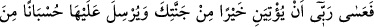
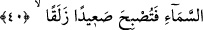
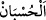

cümle, bahçenin de ondaki mahsûlâtın da Allah’ın dilemesi ile olduğunu îtirafa
teşviktir. Şâyet O, dilerse onları mâmûr olarak bulundukları hâl üzere bırakır. Dilerse
harabeye çevirir, yok eder. Yine bahçene girdiğinde aczini, onun îmarını ve
düzenlenmesini kolaylaştıranın Allah Teâlâ’nın yardımı ve muktedir kılması olduğunu
îtiraf ederek böyle söyleseydin.
Bir hadiste şöyle buyrulmuştur: “Kim bir şeyi görüp beğenir de: “Mâşâallah lâ
havle velâ kuvvete illâ billâh” derse nazar ona zarar vermez.”[179] Başka bir hadiste
de şöyle buyrulmuştur: “Birisine hayırlı âile ve mal verildiğini gören kimse o zaman:
“Mâşâallah lâ havle velâ kuvvete illâ billâh” derse artık onda hiçbir kötülük
görmez.”[180]
Nebî (a.s.) “Lâ havle velâ kuvvete illâ billah”ın anlamını şöylece açıklamıştır:
“Allah’ın koruması dışında Allah’a isyandan koruyacak hiçbir güç yoktur. Allah’a
tâate kuvvet yalnız Allah’tandır.”[181] Rivâyet edildiğine göre: “Lâ havle vela kuvvete
illâ billah” sözü doksandokuz türlü derde devadır. Bunların en hafif olanı da
üzüntüdür.”[182]
“Eğer malca ve evlâtça beni kendinden güçsüz görüyorsan (şunu bil ki):” Buradaki
‘görme’, ya gözle görmedir ya da ‘bilme’ anlamındaki görmedir (rü’yet-i ilmiye).
40. “Belki Rabbim bana, senin bağından daha iyisini verir; senin bağına ise gökten
yıldırımlar gönderir de bağ kupkuru bir toprak hâline gelir.”
“Belki Rabbim bana” îmânımdan ötürü âhirette bu “senin bağından daha iyisini
verir.” Çünkü dünyadaki bahçe fânîdir. Oysa cennet bahçeleri bâkîdir. “Senin bağına
ise” senin dünyadaki bahçenin üzerine “gökten yıldırımlar gönderir de” azâb dolu,
yıldırım veya ateş yağdırır.
el-Kâmûs’ta der ki: “ el-Husbân; hesab, azâb, belâ, şer ve yıldırım demektir.”
Fakir (Bursevî) der ki: “Burada nasihat eder konumda olan mü’min kardeş, nimetlere
nankörlük etmenin hüsranı, kendini beğenmenin, büyüklenmenin de harab olmayı
gerektirdiğini bildiği için, bu tavrını sürdürürse onun başına gelecekleri bildirmiştir:
Nitekim Allah Teâlâ şöyle buyurur: “Bir millet kendi durumlarını değiştirmedikçe,
Allah onların durumlarını değiştirmez.” (er-Ra‘d, 13/11) Kardeşine nasihat eden
mü’minin bu sözleri, “Ben bu bağın ebediyyen yok olacağını sanmam” diyerek inkâr
eden kardeşine bir cevaptır.
“Bağ kupkuru bir toprak hâline gelir.” Bu senin bağın kupkuru bir toprağa
dönüverir. Yâni otları ve ağaçları kökünden kazınıp yere yapıştığı için kaygan toprak,